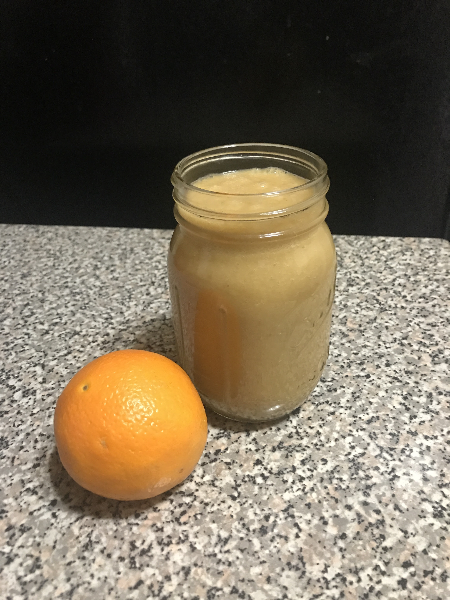
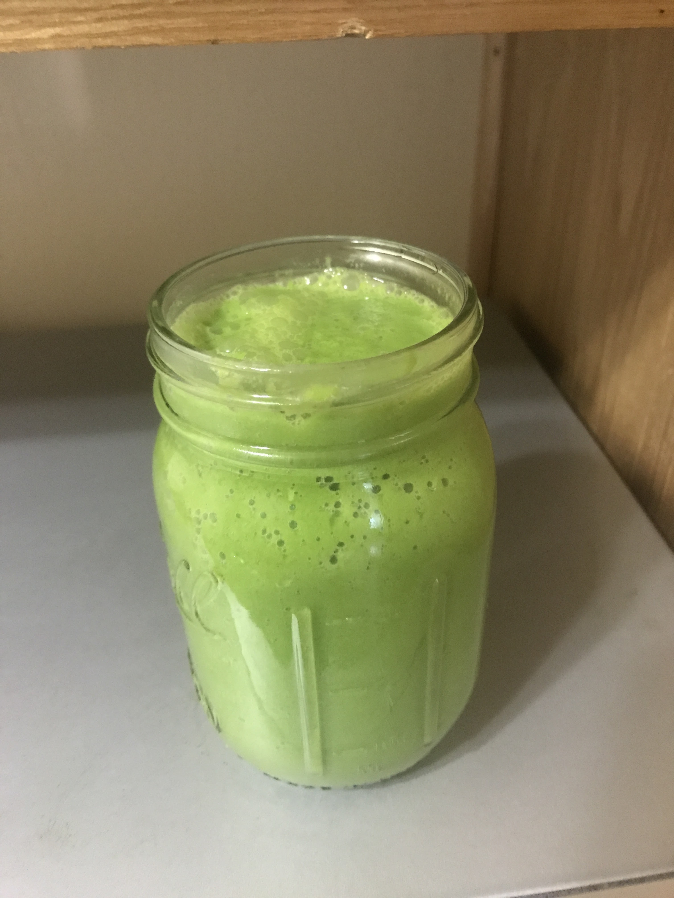
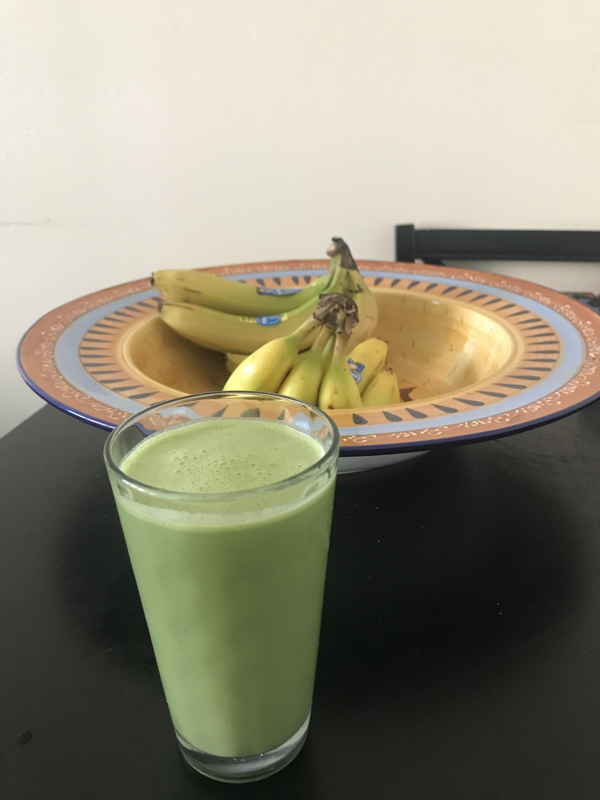
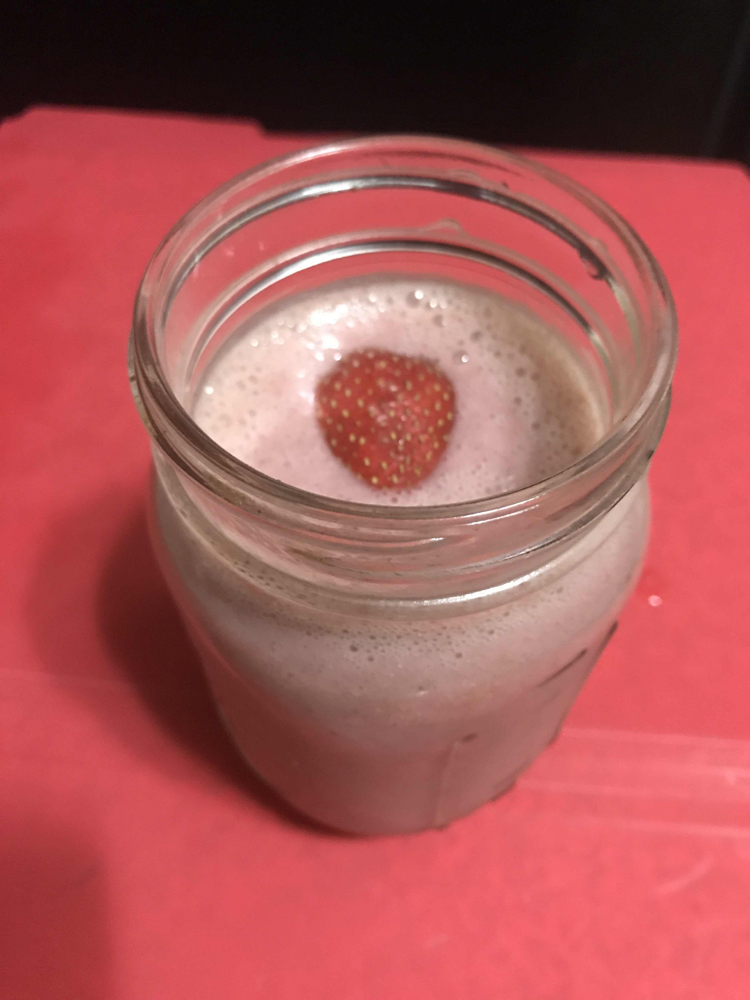
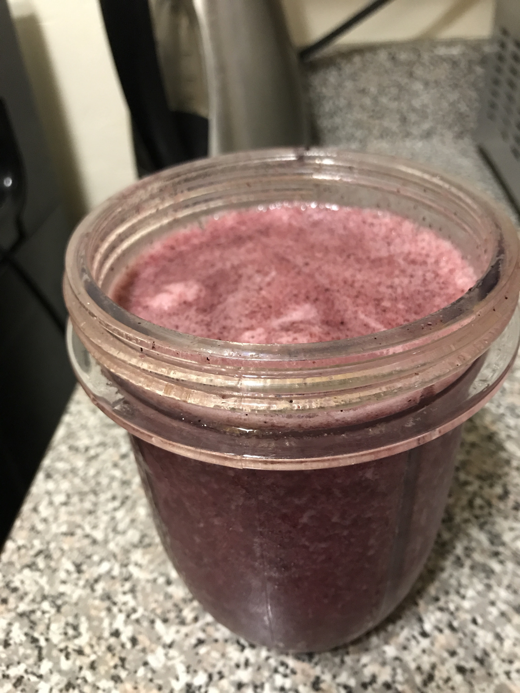

1 peeled Orange, 1 peeled Banana and 1 cored and sliced Apple Place in blender with 1 cup of water for 1 minute. Optional : sweetener like Stevia or Agave (small amount for taste)

Green Day
1 Avocado, a handful of green grapes and 1 cup of spinach
Place in blender with 1 cup of water for 1 minute. Optional : sweetener like Stevia or Agave (small amount for taste

Green Peanut Punch
1 cup of Spinach, 1 Banana, 1 table spoon Peanut Butter (to be fair put as much as you like, it all taste great), a table spoon of nutmeg and any milk. Place in blender for 1 minute. Optional : sweetener like Stevia or Agave (small amount for taste)

Banana-Strawberry
1 Banana, handful of Strawberry and small amount of sweetner.
Place in blender with 1 cup of water or any milk for 1 minute.

Morning Porridge
1 Banana, 1 Peach and 1 cored and slice Apple and teaspoon of flax seeds Place in blender with bananas touching the blade then peaches and apples last. (you are not adding water to this so your blender will be working harder, this order will reduce how much engry it need to blend everthing. ) blend till everything is broken down or to your desire.
Berry Mix
Half cup of Strawberries, half cup of blueberries, handful of Pineapple and flax seed. Place in blender with a cup to two cups of water, depend of how thick you like it. Blend for 1 minute.
